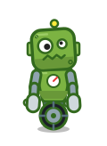
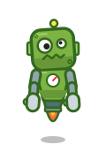
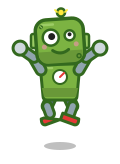
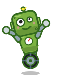
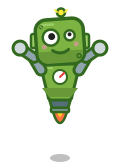
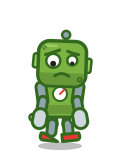
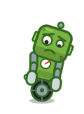
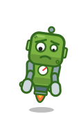

A 二本脚
B 一輪
C 浮遊
正面


喜ぶ



しょんぼり



顔は既存のアイコンのまま。首から下だけを変えています。上半身（胴・腕・手）は3案で共通です。 すべて部品（頭・胴・上腕・前腕・手・脚／車輪／噴射口）の回転と差し替えだけでポーズを作っています。








| 観点 | A 二本脚 | B 一輪 | C 浮遊 |
|---|---|---|---|
| 身振りの伝わりやすさ | ◎ 跳ねる・よろける・膝をつく・歩くが自然。うなずく・指さすは上半身で共通 | ○ 前後に傾く・急停止・後ずさりで感情が大きく出る（しょんぼりの前傾は3案で最も読める）。跳ねる・よろけるは不自然 | △ 上下の浮き沈みで喜び・落ち込みが出る。重い部品でよろける・座るが弱い |
| 小さく表示（64px） | ○ 脚が細く、64px ではつぶれ気味。正面の形は安定 | ◎ 車輪が目印になり、64px でもボルトだとわかる | ○ 炎の色が目立つが、体の下が細く、頭でっかちに見える |
| 切り絵アニメの作りやすさ | △ 部品が最多（脚6つ）。歩きの動きの調整に手間 | ◎ 車輪は回すだけ。傾きは根元の回転1つ | ◎ 部品が最少。揺れは位置のずれだけ |
| 工場の世界観 | ○ 作業員らしさ | ◎ 台車・フォークリフトのような工場の機械らしさ | △ 工場より宇宙寄り |
| ロケットの夢との相性 | ○ ふつう | ○ ふつう | ◎ 噴射口がロケットの夢と直結。ただし完成の喜びが先に出てしまう |
| ストーリーの場面（屋根に登る・座って星を見る・設計図を広げる） | ◎ すべて自然 | ○ 屋根に登るは工夫が要る（はしごを車輪で？）。座るは車輪の上に腰を落とす | ○ 登るは浮くだけで済むが、座るは不自然 |
おすすめ: A 二本脚。ストーリーの身振り（屋根に登る・座る・よろける・設計図を広げる）をすべて自然に描けるため。 64px での脚のつぶれは、脚を太く短くして直します。工場らしさを足したい場合は、B の車輪を足の裏の小さなキャスターとして混ぜる案もあります。